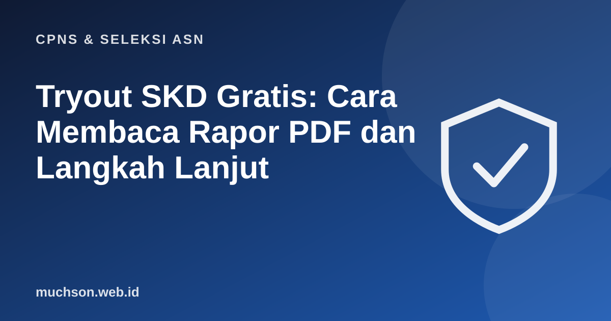

Beranda › Artikel › CPNS & Seleksi ASN
CPNS & Seleksi ASNTryout SKD Gratis: Cara Membaca Rapor PDF dan Langkah Lanjut
Tryout bukan sekadar menghitung skor. Nilainya ada pada apa yang Anda lakukan setelahnya. Rapor PDF dari tryout SKD di LolosSeleksi dirancang untuk menjawab tiga pertanyaan: di subtes mana saya di bawah ambang batas, bab apa yang harus dipelajari dulu, dan soal apa yang perlu diulang. Berikut cara membaca dan memakainya.

Tryout SKD yang gratis dan apa yang Anda dapat
Paket pertama setiap jalur gratis: tryout SKD paket 1, PPPK paket 1, dan BUMN paket 1, lengkap dengan rapor PDF. Paket SKD memakai komposisi resmi 110 soal dalam 100 menit: TWK 30, TIU 35, dan TKP 45 soal. Jawaban dinilai di server setelah Anda menekan Selesai, sehingga skor tidak bisa diubah dari browser.
Deskripsi teks diagram
- Kerjakan 100 menit: tanpa membuka catatan
- Terima rapor: skor dan ambang per subtes
- Baca prioritas: bab dengan poin hilang terbanyak
- Ulang soal salah: dengan pembahasan
- Tryout berikutnya: dalam dua minggu
Isi rapor PDF, bagian demi bagian
| Bagian rapor | Isi | Cara memakainya |
|---|---|---|
| Ringkasan | Nama paket, tanggal, waktu pengerjaan, dan jumlah soal | Perhatikan waktu: apakah mendekati 100 menit atau terlalu cepat |
| Skor | Skor tiap subtes terhadap ambang batas dan nilai maksimal | Cari subtes yang di bawah ambang batas; itu prioritas pertama |
| Radar | Persentase poin per kelompok bab | Lihat bentuk: sumbu terpendek adalah kelemahan |
| Prioritas belajar | Bab dengan poin hilang terbanyak, disertai tautan modul bab | Pelajari modul bab itu, lalu kerjakan latihannya |
| Soal yang perlu dipelajari ulang | Soal berkunci yang salah atau kosong, dan soal TKP yang bernilai 3 poin ke bawah | Baca ulang pembahasan dan catat alasan salah |
Rapor dibuat di browser dari hasil terakhir yang tersimpan, lalu disimpan sebagai PDF lewat dialog cetak (berjalan di HP maupun desktop). Pilih tujuan "Simpan sebagai PDF".
Membaca skor dengan benar
Ambang batas berlaku per subtes: tiap subtes harus memenuhi nilainya. Rujukan terakhir untuk formasi umum CPNS adalah TWK 65, TIU 80, dan TKP 166 (KepmenPANRB 321/2024). Tryout menampilkan apakah skor Anda memenuhi ambang batas, tetapi ingat bahwa lulus SKD sebenarnya juga bergantung peringkat 3 kali kebutuhan jabatan.
Langkah lanjut setelah rapor
- Tulis tiga angka Anda (TWK, TIU, TKP) dan selisihnya terhadap ambang batas.
- Ambil dua bab teratas dari "Prioritas belajar". Jangan menambah bab baru dulu.
- Kerjakan latihan bab itu sampai akurasi stabil, lalu tinjau soal yang masih salah.
- Ulangi tryout dalam dua minggu dan bandingkan dengan rapor sebelumnya.
- Waspadai pola waktu. Jika waktu pengerjaan jauh di bawah 100 menit tetapi banyak salah, kurangi terburu-buru; jika kehabisan waktu, latih manajemen waktu (artikel simulasi CAT).
Ambil tryout SKD pertama gratis di LolosSeleksi, lalu gunakan panduan di atas untuk membaca rapornya.
Tanya jawab
Apakah tryout SKD benar-benar gratis?
Berapa lama tryout SKD?
Bagaimana mengunduh rapor?
Soal apa yang masuk daftar ulang?
Berapa sering sebaiknya tryout?
Referensi
- Halaman tryout CAT LolosSeleksi (membuka tab baru)
- Halaman harga LolosSeleksi: isi paket gratis dan berbayar (membuka tab baru)
- Keputusan Menteri PANRB Nomor 406 Tahun 2026 tentang Nilai Ambang Batas SKD Sekolah Kedinasan (JDIH KemenPANRB, 27 Juli 2026) (membuka tab baru)
- Rangkuman nilai ambang batas SKD CPNS 2024 (KepmenPANRB 321/2024), Okezone (membuka tab baru)